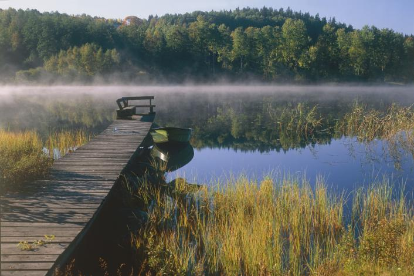
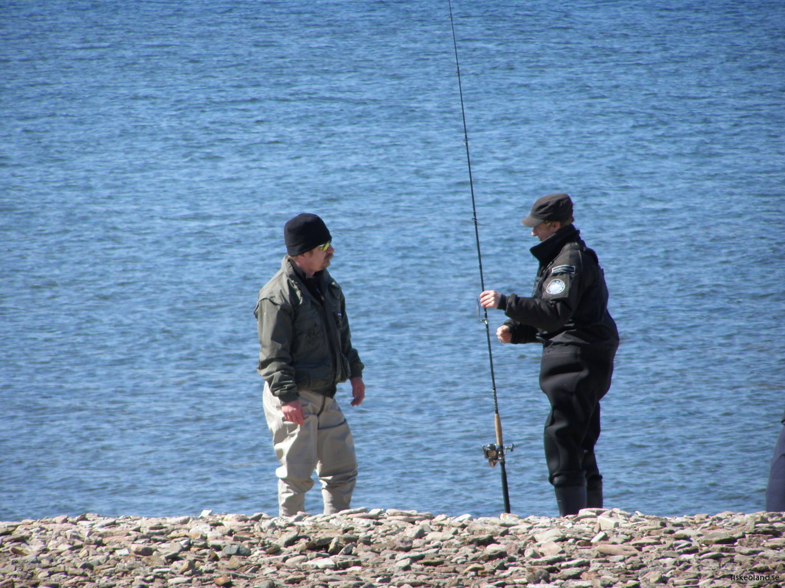

Welcome to Fishing Trip Online!
Welcome to Fishing Trip Online! There where it is all about fishing. Mostly we focus on recreational fishing, but also on fishing in general.
Home
You are currently within this section. The home page is part of it. You could also visit the survey within this section, so if you would like to help out improving the Fishing Trip Online project, that is cool too.
Information
The information section has all the information you seek, hopefully... Let's break it down:- Why Fishing: Want to know why you should fish? Check this page!
- Events: Need to know about any fishing activities around the area? Check this page!
- Hotels: Looking for a place to stay on your fishing trip? Or just looking for a fishing-themed hotel? Check this page!
- Restaurants: Hungry? There might be some restaurants serving fish dishes. Or at least around your fishing area. Check this page!
Fishing Guide
The information section has all the information you seek, hopefully... Let's break it down:- Equipment Guide: One does not simply go fishing. Be prepared for what you need!
- Fish & Bait: So many different types of fish. How would you know how and where to catch them?
- Equipment List: Searching for fishing gear? Here is what you can buy and where you can buy.
- Compare: Sometimes you just want to compare an fishing item with a similar item.
Locations
The information section has all the information you seek, hopefully... Let's break it down:- Map: For knowing where to fish on Småland or Öland!
- Fishing: Searching for a specific spot? This page might help show you where.
Fishing sceneries in Småland and Öland
Fishing in Småland.
Fishing on Öland.
